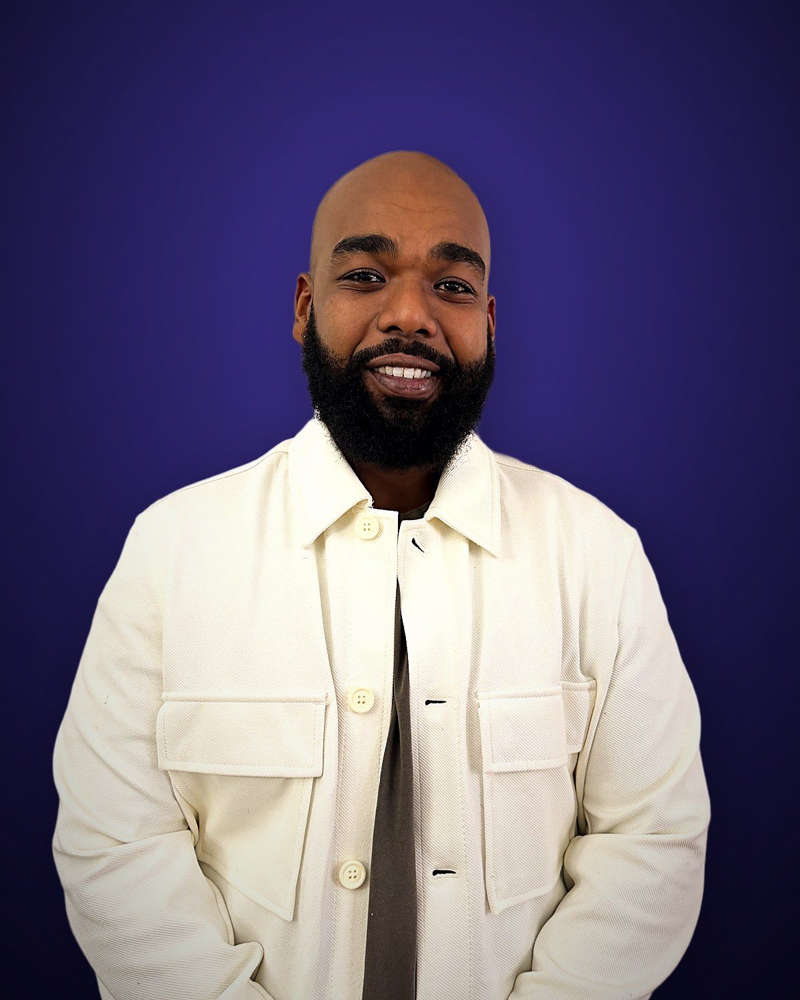

Home / About Us
Who we areStrong Roots. Strong People. Strong Communities.
We believe people are stronger when they are supported, and communities are stronger when their people have somewhere to turn.
A trusted first point of contact
At Strong Roots Crisis Helpline, our mission is to provide compassionate, confidential and culturally responsive phone support to people navigating life's challenges, with a primary focus on African, Black and Caribbean communities.
We recognise that many people face barriers to mental health care, housing, healthcare and community services because of systemic inequity, racism, cultural stigma, language, and a shortage of culturally responsive support.
Our goal is to bridge those gaps — a place where people are heard, respected, supported, and connected to the services they actually need.
Our trained support specialists provide active listening, emotional support, crisis support, resource navigation, referrals, and — with consent — follow-up for up to 90 days. That ongoing connection is what helps people get past barriers instead of stopping at them.
We strengthen individuals, families and communities by promoting wellness, resilience, equity, connection and hope.
Canada's leading culturally responsive helpline
We are building Strong Roots into Canada's leading culturally responsive phone support and community navigation organisation for African, Black and Caribbean communities.
We imagine a future where people can easily reach compassionate support and real connections to mental health, housing, healthcare, settlement, employment and social services — regardless of their background or circumstances.
Over the next five to ten years, Strong Roots aims to expand across Ontario, throughout Canada, and eventually internationally to support African and Caribbean diaspora communities — while remaining open to anyone in need of compassionate support.

Why Strong Roots was created
"Strong Roots Crisis Helpline was created in response to a growing need for accessible, culturally responsive support within African, Black and Caribbean communities.
Too often, people struggle in silence. They don't know where to turn, they fear being misunderstood, they carry stigma, or they hit a wall the moment they try to reach an existing service. For some, asking for help at all is the hardest part. For others, the real difficulty is finding someone who understands their cultural background, their experiences and their circumstances.
Strong Roots was created to help change that.
Our goal is a trusted first point of contact — somewhere people can call, be heard without judgement, receive genuine support, and get connected to resources that help them move forward. Through phone support, community partnerships, referrals, resource navigation and ongoing follow-up, we are working to become a bridge between people and the services they need.
Our work is rooted in compassion, dignity, cultural understanding, equity and community. And although it is centred on African, Black and Caribbean communities, our lines are open to anyone seeking support, guidance, connection and hope.
Strong communities begin with people who know they are not alone."
Not simply to answer a phone call
Through trusted community partnerships and compassionate service, this is what we are working toward.
Less isolation
Reducing loneliness and emotional distress by making sure no one has to sit with it alone.
Better access
Improving access to mental health and social services, and reducing inequity in who gets to use them.
Real connections
Strengthening the link between individuals and the community resources built to help them.
Systems made navigable
Helping people move through complicated systems that were never designed to be easy.
Support through transition
Standing with people during crisis and during the unsettled periods that follow one.
Stronger communities
Strengthening families and promoting resilience, wellness and hope across our communities.
Listen. Support. Connect. Empower.
People are stronger when they are supported, and communities are stronger when their people have somewhere to turn. No one should have to face life's challenges alone.